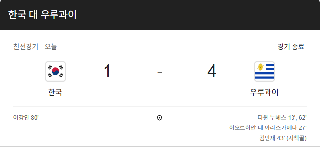

대패

대패
선수 수준 더 높은 팀 상대로 이기는건 명장이나 가능한거고, 전력 비슷한 팀 상대로 분석하고 전술 준비해서 승리확률 높이는것만 잘 해도 충분히 좋은 감독임.
ㅈ발렸네 ㅠㅠ
후반만 봤는데 초반 10분은 잘하는데 왜 0:3이지 했다가
그 후로 패스 안되는거보고서는 아 전반 0:3 인줄 알겠네 함
민재 자책골 ㅠㅠ
삼겹살
나여
백종원
직관에서 봤다...
첫 골 넣을 때 갑자기 폭풍 밀이치듯
번개 같은 패스... 파도 같은 공격수 침투로 쥰내 어의 없이 골 먹힘.... 피지컬도 좋고 볼도 잘차는 놈들이 맘 먹고 한꺼번에 들어오니까 어쩔 수가 없었다
어의없으면 왕들 진료 못받음 ㅠㅠ
어의가어이없네
50대 노친네같네
직관에서 x
어의 x
아 친선전이네?
강팀만나면 중앙에서 앞으로 연결도 안되고
수비는 슝슝 뚫리고
고질적인 문제
단점을 봤으니 보완책을 찾겠지..
홍명보였다면 이게 팀이냐고 승질 내고 다음 날 정신력 단련 뭐 이딴거 하겠지만
우루과이 후반엔 열심히 뛰지도 않던데
심지어 선수교체도 거의 안함
언제나 느낀거지만 3선 문제 -> 이거 해결이안됨. 선수풀이 없어.
다만 감독은 마음에 들음. 공격 전술보면 어떻게 하겠다 이게 보임. 수비는뭐.. 조직력문제라 나아질거라 봄
선수진 개썩음 제일 구멍이 골키퍼임 세밀한 패스안돼서 뻥뻥 때리고 늙어서 둔한데 생각 느려서 미리 각도 못좁히고 예측도 못함 수비컨도 안되는데 정성룡마냥 쓰던 애라 쓰는거라 하루빨리 쳐내야함
승규 형도 나이가 먹어서 그렇지 ㅠㅠ 조현우 밀어내고 그 자리 먹은 거야.. 킥 선방 다 되던 선수였는데
킥 되던거도 정말 짧은 시기였고 월드컵 이전부터 맛탱이감 홍명보야 선발 자체에 지능이 없던 놈이고 지금은 임감이라 이해는 하는데 골키퍼 빨리 교체해야함 부상 이후에 폼 맛가서 제이리그에서도 재앙임 걍 구성윤 써야함
이강인 골로 돼있네 ㅋㅋ
네이버는 손흥민이던데
우루과이는 뭐.. 솔직히 다들 기대는 많이 안했잖아.
그렇긴한데 우루과이도 국대 암흑기임
저번 월드컵에서 광탈했고 최종순위가 우리보다 낮음ㅋㅋ
좆밥이랑만 붙는 명보랑은 다르네
강팀이랑 붙어야 강해지지
한일전 질까봐 일부러 안한거 보고 충격먹긴했지
좀 잘 되는날도 유럽은 털어먹어도 남미는 뭐 어떻게 하지를 못하니..
삼겹살임?
오 골 넣긴 했네
쏘니 골 아니었어?
하는지도 몰랐네
발베르데도 없다더니
이런 상대전적 1승 2무 8패인 팀에게
1승 1무 가져온 파울루 벤투 감독님
그립습니다 goat...
또또 축일못 냄비근성시작ㅋㅋ
감독특징 나무위키에 써있더라 전력이 비슷한 팀까지는 어케 잘 비비는데 좀 높은 애랑 만나면 답이 없다고